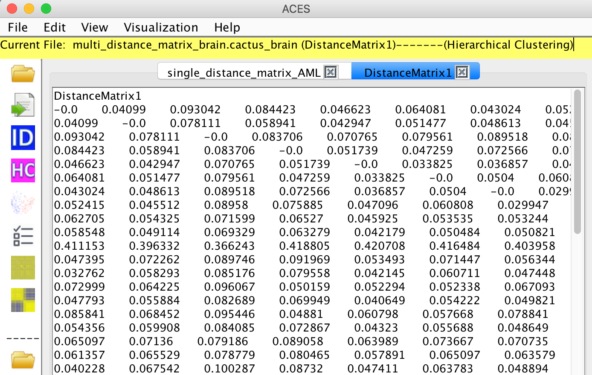

| Latest Version .jar File | View on GitHub |
Get ACES |
ACES is a machine learning toolbox for clustering analysis and visualization of both biological data and other types data. Given the biological data or their distance/probability matrix, ACES can automatically extract the features of each identity and cluster them by various widely used clustering algorithms. To facilitate the Hierarchical and k-means Clustering, the candidate centroids of clusters are first estimated by a novel distances and standard deviation based algorithm. To visualize the original data or distance matrix, Principle Component Analysis is used to reduce the dimensionality and extract three significant components for plotting them into 3D space. ACES also provides the interface for clustering analysis and visualization together with the attributes or sample information of each identi.ty. It is clear to show which attributes contribute to the clustering results.
Step 1: Get the latest version of ACES, together with some data for testing, from here. To run ACES just double-click on the latest ACES.jar file.
Step 2: Check the format of files. Original Data, Distance Matrix, Data Attributes
Step 3: Start your ACES journey.
Check the recommended format
Open a file
Check the recommended format
Open a file or files
Get the number of Clusters
Show Hierarchical clustering results
Show K-means clustering results
Show DBSCAN clustering results
Check the recommended format
Open a SampleInfo file
Show all the Attributes in the SampleInfo file
Show the discriminative power of each Attribute
Select an Attribute to plot
Add Clusters Info to the SampleInfo file
Save the SampleInfo
Plot samples with clustering results
Plot samples with the selected attribute
Heat map of the samples
Heat map of the samples with clustering results
Heat map of the samples with the selected attribute
There are two choices to format your sample data file: File -> Formats -> Raw data
Format 1: The Label ID is shown in the one of columns. The data vector of each sample is distributed by rows.
Format 2: The Label ID is shown in the one of rows. The data vector of each sample is distributed by columns.
File -> Open -> Raw data
The file named "Original_Data_file" in the test samples folder can be used for testing.
User is asked to set the required parameters to extract the sample data and the label IDs will be automatically set as "Sample1, Sample2, Sample3..." if there is no label information in the file or the user fails to set the label location.
Once the sample data file is loaded, ACES will automatically calculate its distance matrix and obtain the Hierachical clustering results.
There are three distance matrix mearurement methods provided in ACES:
1. Manhattan distance
2. Euclidean distance
3. Pearson's correlation coefficients (ACES automatically converts them to range [0,1])


There are four choices to format your distance matrix file: File -> Formats -> Distance matrix
For each format, it is allowed to contain the name of distance matrix.
Format 1: Labels locate in both horizontal and vertical
Format 2: Labels locate in horizontal
Format 3: Labels locate in vertical
Format 4: no labels, labels will be automatically set as "Sample1, Sample2, Sample3..."

File -> Open -> Distance matrix
For single distance matrix, the file named "single_distance_matrix_AML" in the test samples folder can be used for testing.


If the file contains many distance matrices, please select one of the matrix to analyse.
The file named "multi_distance_matrix_brain" in the test samples folder can be used for testing.
If you want to choose the other distance matrix to compare or analyse: Edit -> Select other distance matrix
The current distance matrix is shown in the menu.

View -> Clustering -> Numbers


View -> Clustering ->Hierarichical
The number of clusters has been estimated automatically so that the user doesn't need to set the parameters.
The clustering results will be shown on the screen.
View -> Clustering -> Kmeans
The number of clusters and the centroids have been estimated automatically so that the user doesn't need to set the those parameters.
The clustering results will be shown on the screen.
View -> Clustering -> DBSCAN
The scan radius and minimum number of samples have been estimated automatically and provided on the dialog below. However, it is best to use your own parameters as this clustering algorithm aims at clustering samples by density and it is hard to estimate them automatically only on the basis of the data.
The clustering results will be shown on the screen. "0" means the outlier or noisy sample that is defined in the DBSCAN algorithm.
The samples can be visualized in the 3D space or 2D plane by the PCA dimensionality reduction. Each sample is coloured by its clustering result.
As the figure shown below, all the samples are clearly categorized into two groups after PCA, which shows that the blue samples and pink samples are two seperate groups.
The number of clusters/groups are automatically calculated by ACES, however, the cluster results might be varying if the user selects different clustering algorithms. The number of clusters can be changed by setting different parameters in DBSCAN clustering.
The 3D plot can be rotated to have an appropriate view.
The Label IDs are shown on the right. Both the points on the left plot and IDs on the right can be selected when the user clicks. As shown in the 3D plot, the top point/sample is selected (the colour change to black from pink) and its ID is immediately shown in the legend highlighted by black.
Visualization -> 3D Plot -> Samples

Visualization -> 2D Plot -> Samples
The distance matrix, which demonstrates the relationship between each two samples pair, can be visualized by the Heat map. Visualization -> Heat Map -> Original Distance Matrix

The samples in the distance matrix are reordered according to the clustering results. Visualization -> Heat Map -> After Clustering
The distance matrix has been reordered by the clustering results.

File -> Formats -> Attributes
File -> Open -> Attributes
The file named "samplesInfo_AML" and "samplesInfo_brain" in the test samples folder can be used for testing.

According to your Distance Matrix, ACES will automatically check whether your input SampleInfo file is correct and then remind you to sort your SampleInfo file. Please open the file "samplesInfo_brain" to better understand the following example.
To sort the SampleInfo file, the SampleInfo Labels should be choosen first.
Then, ACES will remind you to reformat the SampleInfo or Distance Matrix labels.
To make them consistent, you can simply change the Distance Matrix labels.

Or, change both types of labels.

The new labels will be shown on the screen.

View -> All attributes
 ....
....

View -> Discriminative power
The discriminate power of each attribute is estimated by our proposed algorithm.
Edit -> Select an attribute to plot

For example, the Gender is selected.


The clustering results can be added to the SampleInfo file. Edit -> Add clusters to SampleInfo

The user can save the sorted SampleInfo file. File -> Save the SampleInfo

Visualization -> 3D plot -> Selected Attribute

Visualization -> 2D plot -> Selected Attribute
The selected attribute info are shown on the bottom of heat map using the same colour shown in the PCA plot. Visualization -> Heat Map -> with Selected Attribute